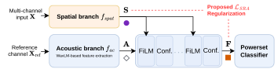

Preserving Spatial Structure in
Foundation-Model-Based Multi-channel Speaker Diarization

Model:
View:
S: Spatial
A: WavLM
F: Final fused
Normalized score ↑ (shared scale)
Hollow bars: S-DiariZen Filled bars: S-DiariZen-SRA
Training S-DiariZen with SRA improves spatial decodability at the fusion endpoint F, which feeds the powerset classifier. In the examples below, improved spatial decodability at F is accompanied by lower diarization error.